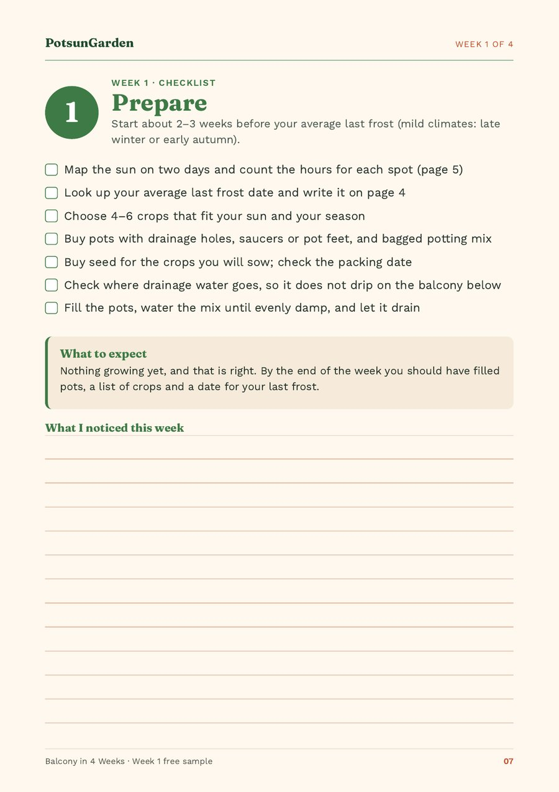

How to grow vegetables on a windy balcony
Grow low, compact, small-leaved crops: cut-and-come-again lettuce, rocket, spinach, radishes, chives, thyme and parsley, plus dwarf peas or beans on short supports. Use wide, low pots close to the wall, and water more often, because wind dries pots fast. Add a semi-permeable screen, not a solid one, where your building allows. Skip tall tomatoes and climbing beans.
Quick facts
| Best crops | Cut-and-come-again lettuce, rocket, baby spinach, radishes, chives, thyme, parsley; dwarf peas or beans on short supports |
|---|---|
| Crops to avoid | Tall (cordon) tomatoes, climbing beans, big courgettes (zucchini), sunflowers |
| Pots | Wide, low, heavier base; plastic, metal or fibreglass lose less water than terracotta (RHS) |
| Screens | Semi-permeable, ideally filtering 50–60% of the wind; solid barriers cause eddies (RHS) |
| Watering | Check daily in warm, windy weather; in summer, often twice a day (RHS) |
| Before a storm | Tall pots to the floor by the wall; very tall pots laid down; light items indoors |
| Safety | Nothing on the rail ledge or outside the railing |
Why wind is hard on balcony vegetables
Wind causes four problems on a balcony, often at once:
- Pots dry out faster. The University of Maryland Extension notes that breezes dry container mix faster than sheltered spots, and the RHS warns that containers dry out rapidly in windy, hot weather.
- Plants rock loose or snap. The RHS calls it windrock: tall or top-heavy plants are buffeted until their roots loosen, which slows growth and can blow them over.
- Leaves scorch or shred. Leaves that lose water faster than the roots replace it go brown at the edges. The RHS says large-leaved plants suffer more than small-leaved ones, and pot plants are at particular risk.
- Light pots tip. Maryland Extension warns that tall plants in small, lightweight containers can blow over unless well anchored.
Safety matters too: anything that falls from a balcony can hurt someone below. Keep everything inside the railing, nothing on the rail ledge, and follow your building rules.
How windy is your balcony? (a 1-week check)
You don't need a wind gauge. For one week:
- Tie a ribbon to the railing and look at it morning, midday and evening.
- Find the calmest corner, often by the wall or beside a side wall.
- Watch for gusts funnelling between buildings. The RHS describes this wind-tunnel effect between tall buildings.
- Note where the worst wind comes from. That side gets your toughest pots, and any screen.
Upper floors and corners are often windier, but trust what you see. Do this the same week you count your hours of sun: the best spot has enough sun and the least wind, and that is often not the railing edge.
The best vegetables and herbs for a windy balcony
Grow low, compact, small-leaved crops: cut-and-come-again lettuce, rocket, baby spinach, radishes, chives, thyme and parsley, with dwarf peas or beans on short supports. The RHS says low-growing plants reduce wind damage on exposed balconies, and that plants with needle-like or very small leaves cope with wind and sun because they lose less water.
| Crop | Why it copes | Smallest pot | Notes |
|---|---|---|---|
| Cut-and-come-again lettuce | Low; regrows after cutting | 8 L (2 gal), 15 cm (6 in) of mix | A trough by the wall |
| Rocket (arugula) | Low and quick | 8 L (2 gal), 15 cm (6 in) | Pick young |
| Baby spinach | Low; picked young | 8 L (2 gal), 20 cm (8 in) | Keep evenly moist |
| Radishes | Low; the crop sits in the mix | 8 L (2 gal), 15 cm (6 in) | Sow a little at a time |
| Chives | Narrow, tough leaves | 8 L (2 gal), 20 cm (8 in) | Buy as a plant |
| Thyme | Very small leaves | 8–20 L (2–5 gal) | Let it dry a little between waterings |
| Parsley | Low clump | 20 L (5 gal), 25 cm (10 in) | Buy as a plant |
| Dwarf peas | Short, if tied in | 15 L (4 gal), 25 cm (10 in) | Short supports from sowing |
| Dwarf beans | Short and bushy | 20 L (5 gal), 30 cm (12 in) | Need 6+ hours of sun |
| Bush cherry tomato | Only in the calmest, sunniest corner | 20 L (5 gal), 30 cm (12 in) | One trial pot, staked at planting |
See the full chart for pot sizes for each crop (thyme: Maryland Extension). Bigger pots hold more water.
Low leafy crops
Grow cut-and-come-again lettuce: it stays low, and if a gale tatters the leaves you cut it back and it regrows. Rocket, baby spinach, and mizuna or chard as baby leaves work the same way. Pick young: big, soft leaves lose the most water.
Roots
Radishes sit low and grow fast. Harvest to Table lists root crops for windy balconies, and community gardeners on exposed London sites, quoted by Vertical Veg, found radishes and most root vegetables did well.
Tough, small-leaved herbs
Start with chives, thyme and parsley. Thyme and rosemary have the small or needle-like leaves the RHS links to wind tolerance. The same London growers report that low plants such as curly parsley did well on windy sites over winter. Thyme likes to dry out between waterings while parsley and chives want steadier moisture (Maryland Extension), so give them separate pots.
Dwarf peas and dwarf beans, if supported
Put short, sturdy supports in at sowing and tie stems in as they grow. The RHS suggests dwarf beans for balconies, and the windy-site growers quoted by Vertical Veg grew good peas on sturdy supports.
Bush cherry tomatoes: only in your calmest, sunniest corner
Can you grow tomatoes on a windy balcony? Opinions differ. Apartment Garden Guide says compact, determinate tomatoes cope if well staked; the London growers quoted by Vertical Veg found tomatoes did very poorly on their windiest sites, even bush types. If you have a sheltered corner with 6 hours of sun or more, try one bush cherry tomato in a 20-litre (5-gallon) pot, staked on planting day. Never a tall cordon variety.
What to avoid
- Tall or top-heavy crops: cordon (indeterminate) tomatoes, climbing beans on tall canes, big courgettes (zucchini), sunflowers.
- Any plant in a small, light, tall pot. It is the first thing to tip.
- Hanging baskets on an exposed balcony. They swing and dry out fast. If you use one, hang it in your most sheltered spot, inside the balcony.
Pots that stay put
To stop pots blowing over, use wide, low pots with a heavy base, group them by the wall, keep nothing on the rail ledge, and move tall pots to the floor before a storm, all within the weight your building allows.
- Wide and low beats tall and narrow. Maryland Extension notes that a container wider than it is tall is less top-heavy and more stable in a breeze than a tall one of the same volume.
- Group pots so they shelter each other: toughest on the windward side, tender ones by the wall. Grouping also slows drying (Maryland Extension).
- Material: for small containers the RHS prefers plastic, metal or fibreglass to terracotta, because they lose less moisture.
- Weight is a trade-off. A heavier pot resists tipping, but remember how heavy a wet pot gets: a 30-litre (8-gallon) pot can weigh 20 kg (45 lb) or more. The RHS notes that balconies have strict weight limits and advises putting heavy containers near load-bearing walls. Check with your building manager or lease.
- Railing planters go on the inside of the railing, with brackets made for them.
- Fabric grow bags are light and can blow over when dry. Keep them low and grouped, or skip them.
Before you buy, check weight and drainage, as on Day 6 of our first-week guide.
Windbreaks and screens that work (and are allowed)
To protect balcony plants from wind, filter it rather than block it. The RHS says an effective windbreak is semi-permeable, ideally filtering 50–60% of the wind; solid barriers cause damaging eddies on each side. For balconies it recommends slatted or mesh screens over solid walls, with well-supported fixings.
Windy balcony ideas that follow those rules:
- Mesh or windbreak netting, or a woven reed or willow screen, tied taut to the inside of the railing.
- A living screen: a row of sturdy pots of tough plants on the windward side, with salads behind.
Check your lease or building rules first, and never drill or fix anything to the building without permission. Vertical Veg adds a fair warning: a screen also cuts some light.
Watering and mulching on a windy balcony
There is no fixed schedule. In warm, windy spells, do the finger test daily: push a finger 2–3 cm (1 in) into the mix and, if it is dry, water until it runs out of the holes. The RHS says balcony containers often need watering twice a day in summer; in winter you will water far less. Bigger pots dry out more slowly.
Mulch slows drying: the RHS recommends it against the drying effect of wind, and Maryland Extension suggests fine bark, straw or shredded leaves once seedlings are a few weeks old. Press it down so it doesn't blow away.
After a windy day, check pots even if it rained: the balcony above often keeps rain off (RHS), and wind dries the mix quickly.
Supports and ties
Put canes in at planting time; Maryland Extension advises installing supports while plants are young, so you don't damage roots later. Use soft ties and short, sturdy supports, kept below the top of the railing. If a plant rocks loose, the RHS fix for windrock applies: tie it to a sturdy support and firm it back in.
Before a storm: a 5-minute checklist
- Move tall pots off stands onto the floor, close to the wall.
- Lay very tall pots on their side, wedged so they can't roll.
- Bring in seed trays, light pots, saucers and anything that could blow off.
- Take down or roll up temporary screens that could catch the wind like a sail.
- Check ties, and add one wherever a stem rocks.
- Afterwards, check pots for dryness and firm in any loosened plant.
Windy and cold: winter on an exposed balcony
Cold wind dries plants too, and roots can't take up water from frozen mix. The RHS says pot plants are at particular risk of wind scorch. Group pots against a sheltered wall, but not where buildings create a wind tunnel, and anchor any fleece well so it can't blow away. See also how to protect pots from frost.
A starter plan for a windy balcony (five pots)
- A wide, low trough of cut-and-come-again lettuce, 15 cm (6 in) of mix.
- An 8-litre (2-gallon) pot of rocket.
- An 8-litre (2-gallon) pot of radishes.
- A 15-litre (4-gallon) pot of dwarf peas, with short supports.
- An 8-litre (2-gallon) pot of chives, with thyme in its own small pot beside it.
Group them by the wall, toughest pots on the windward side, lettuce in the calmest corner. Balcony in 4 Weeks covers sowing, thinning, feeding and supporting crops like these, with 15 common problems and fixes (€9).

Frequently asked questions
Why is my balcony so windy?
Height, exposure and the buildings around it. A high or open balcony has little nearby to slow the wind, and the RHS notes that wind can be funnelled between tall buildings, creating a wind tunnel. Corners and gaps between blocks are often worst. Tie a ribbon to the railing for a week to see when the wind blows, and from where.
Can herbs grow on a windy balcony?
Yes. Small-leaved and needle-leaved herbs such as thyme and rosemary cope best; the RHS links those leaf types to wind and sun tolerance. Chives and parsley are good low choices too. Let thyme and rosemary dry out a little between waterings, and keep soft, large-leaved herbs such as basil in your most sheltered spot.
Do balcony windbreaks work, and are they allowed?
They work if they filter the wind rather than block it. The RHS recommends semi-permeable screens, ideally filtering 50–60% of the wind, because solid barriers cause damaging eddies. Whether they are allowed depends on your lease or building rules, so check first, tie screens to the inside of the railing, and never drill without permission.
Are terracotta or plastic pots better on a windy balcony?
For small pots, plastic, metal or fibreglass. The RHS says non-porous containers lose less moisture than terracotta, which matters when wind dries pots fast. Whatever the material, choose wide, low shapes. A heavier pot resists tipping, but it also adds weight, so check what your balcony is allowed to carry.
Should I move my plants indoors before a storm?
You don't usually need to bring everything in. Move tall pots onto the floor against the wall, lay very tall ones on their side, and bring in light pots, seed trays and anything that could blow off the balcony. Small, precious pots can come indoors for a night or two. Afterwards, check for dry mix and loosened plants.
Will wind damage my plants in winter?
It can. Cold, drying wind combined with dry or frozen mix causes wind scorch: brown, dry leaf edges. The RHS says pot plants are at particular risk. Group pots against a sheltered wall away from any wind tunnel, anchor fleece well, and water only when the mix is dry and no frost is forecast.
Sources
Figures come from our guide Balcony in 4 Weeks (2nd edition) and the free Week 1 PDF unless a source below is named in the text. Sources checked on 3 November 2026.
- RHS: Windbreaks and shelterbelts
- RHS: Roof gardens and balcony ideas
- RHS: Wind scorch
- RHS: How to grow edibles on your balcony
- University of Maryland Extension: Growing vegetables in containers and salad tables
- Vertical Veg (practitioner blog): Wind, why it's a problem and how to reduce its impact
- Apartment Garden Guide (practitioner site): How to grow vegetables on a windy balcony
- Harvest to Table (practitioner site): Crops for a windy balcony or roof